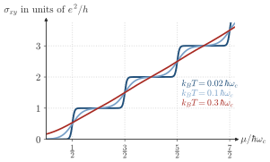
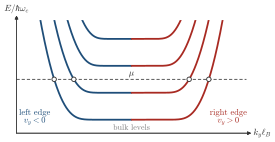
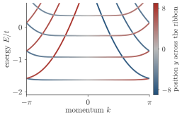

Page 5 of 16 of this session
3.6a Landau levels and chiral edge states in the quantum Hall state
How can an insulator have a Hall conductivity that is not zero, and where does the current flow? We will now see that every filled Landau level adds one to the Chern number, and that the current flows in states at the edge of the sample. On one edge these states propagate in one direction only.
\[\sigma_{xy} = \frac{e^2}{h}\, C, \qquad C = \sum_{n\ \text{filled}} \frac{1}{2\pi}\int_{\text{BZ}} \Omega_n(k)\, d^2k. \tag{3.4}\]
This is the result of Section 3.5. The Hall conductivity of a set of filled bands is an integer \(C\) times \(e^2/h\). The integer is the sum of the Chern numbers of the filled bands, and \(\Omega_n(k)\) is the Berry curvature of the band \(n\).
The Chern number appears in its simplest form in the quantum Hall state itself, which is a two-dimensional electron gas in a strong perpendicular magnetic field. The resulting band structure is the flat-band type of dispersion of Section 2.10, which is a set of Landau levels without dispersion, and each Landau level has Chern number \(+1\). If we fill the first Landau level, the total Chern number is \(C=1\). If we fill the first two, we get \(C=2\), and so on, so that \(\sigma_{xy} = C\, e^2/h\) goes through successive integer plateaus as the chemical potential goes up through successive Landau levels. This is the integer quantum Hall effect, and in Session 4 we will work out its full phenomenology, including the fractional case of Section 4.16. In this session we only need to count the Chern numbers.
With the chemical potential in a gap between two Landau levels, the Hall conductivity is
\[\sigma_{xy} = C\,\frac{e^2}{h}, \qquad C = N_{\text{filled}} = N_{\text{edge}}.\]
Here \(N_{\text{filled}}\) is the number of filled Landau levels of a parabolic band without spin, where no level is degenerate, and \(N_{\text{edge}}\) is the number of chiral modes at one edge. A degenerate level, as in graphene, counts once for each of its copies. The bulk is an insulator, and the current flows in the modes at the edge. All the modes of one edge propagate in the same direction, so they cannot be scattered backwards.
This raises a puzzle. We have an insulator, with a gap between Landau levels, but \(\sigma_{xy}\) is a conductivity, which means that some electron has to move somewhere. The answer is that any real sample has an edge, and at this edge the bulk gap closes. Gapless edge states appear, and they carry the current that (3.4) predicts.
The steps From one chiral edge mode to the conductance of (3.4)
We take the simplest case, which is one mode at one edge, with the dispersion \(\varepsilon(k)\) along the edge. The edge has the length \(L\), and the mode moves in the positive direction, so \(\varepsilon(k)\) grows with \(k\). An electron in the state \(k\) of this mode has the velocity \(v(k)=\hbar^{-1}\,d\varepsilon/dk\), and it gives the current \(-e\,v(k)/L\).
The first step is to raise the chemical potential of this edge from \(\mu\) to \(\mu+\Delta\mu\). The states of the mode with an energy between these two values are now filled. Their number in an interval \(dk\) is \(L\,dk/2\pi\), so the extra current is
\[\Delta I = -\frac{e}{L}\int \frac{L\,dk}{2\pi}\, v(k) = -\frac{e}{2\pi\hbar}\int \frac{d\varepsilon}{dk}\,dk = -\frac{e}{h}\int_{\mu}^{\mu+\Delta\mu} d\varepsilon = -\frac{e}{h}\,\Delta\mu.\]
The velocity cancels against the density of states of the mode, which is \(1/(2\pi\hbar v)\) for each unit of length. So the result does not depend on the dispersion of the edge mode.
The second step is the voltage. A voltage \(V\) between the two edges shifts the chemical potential of one edge with respect to the other one by \(\Delta\mu=-eV\). The modes of the other edge propagate in the opposite direction, and their filling does not change, so the net current along the sample is
\[I = -\frac{e}{h}\,\Delta\mu = \frac{e^2}{h}\,V.\]
The current flows along the sample and the voltage is across it, so the ratio \(I/V=e^2/h\) is a Hall conductance. It is the value that (3.4) gives for \(C=1\). For a mode that moves in the negative direction the same steps give the opposite sign, so the direction of the chiral mode sets the sign of the Hall conductance.
The last step is to take \(C\) modes at the edge. They all propagate in the same direction, and each of them gives \(e^2/h\), so the conductance is \(C\,e^2/h\). For the two results to agree, the number of chiral modes at one edge has to be the Chern number of the filled levels. An impurity cannot change this value, since it would have to send an electron backwards, and the edge has no state that goes backwards.
These edge states have another key property, which is that on a given edge the states propagate in only one direction. The top edge of a sample carries current in one direction only, and the bottom edge carries it in the opposite direction only. A mode that propagates in a single direction is called chiral, and chirality is what protects the quantum Hall state against disorder. An electron in a chiral edge mode cannot backscatter, since there is no state that propagates in the opposite direction at the same edge and the same energy. Without a backscattering channel there is no resistance in this channel.
Figure 3.1 shows both parts of this picture, the closed bulk orbits that carry no current and the skipping orbits that carry all of it. It also shows what happens when an impurity is put in their way.

In a Hall bar we measure the Hall resistance. On a plateau the longitudinal conductivity vanishes, so the Hall resistance is \(h/Ce^2\), which is \(25.8\) k\(\Omega\) for \(C=1\) and \(12.9\) k\(\Omega\) for \(C=2\), with no parameter of the material in it. For this reason the plateau is used as a standard of resistance. The plateau needs a thermal energy \(k_BT\) that is much smaller than the gap between the Landau levels, and for a long time it was only seen at the temperature of liquid helium. In graphene the quantum Hall effect is measured even at room temperature. The measurement is in this article, which is the one given in the notebook session3.ipynb.
Schematic 3.7 shows what the temperature does to the plateaus of equally spaced Landau levels. It is not the full experiment. There the axis is the electron density or the magnetic field, and a plateau in the density needs localized states, which this calculation does not have.

The Hall conductivity of a quantum Hall sample is
\[\sigma_{xy} = C\,\frac{e^2}{h}.\]
Here \(C\) is the number of filled Landau levels. The chemical potential is in the gap between the second and the third level. What are \(\sigma_{xy}\) and the number of chiral modes at one edge?
Show the answers
- A. ✗ False
This is false. One mode and \(e^2/h\) belong to the gap above the first Landau level. With two levels filled, the ribbon spectrum has two branches that cross the chemical potential at one edge.
- B. ✗ False
This is false. The modes of one edge all go in the same direction, and the ones that go backwards are on the other edge. Four modes on one edge would give \(\sigma_{xy}=4e^2/h\), and two modes going back and two going forward could be backscattered by an impurity.
- C. ✓ True
This is true. Each filled Landau level has \(C=1\), so two filled levels give \(C=2\). The number of chiral modes at one edge is equal to \(C\), and all of them propagate in the same direction.

A ribbon with the chemical potential between the second and the third Landau level. Each edge has two crossings, marked by the circles, and the slopes at one edge have the same sign.
The plot shows the bands of a ribbon in a magnetic field \(B\). The horizontal axis is the momentum \(k\) along the ribbon. The color is the position \(y\) across the ribbon. The flat bands are the Landau levels. The slope of a band is the velocity of its states.

g1_qh_ribbon.py
Which plot shows the same ribbon in the field \(-B\)?
Show the answers
- A. ✗ False
This is false. This plot is the same as the one of the question, which would mean that the edge states do not depend on the sign of the field. The Hall conductivity is odd in \(B\), so \(\sigma_{xy}(-B)=-\sigma_{xy}(B)\). With \(\sigma_{xy}=e^2/h\) the chiral mode must go the other way, otherwise the sign could not change.
- B. ✗ False
This is false. This is the ribbon without any field. It has no flat level and no state at an edge, and all its states are spread over the width. The plateau \(|\sigma_{xy}|=e^2/h\) is measured for both signs of the field, and a plateau needs the edge states. Only the sign of the Hall voltage changes.
- C. ✓ True
This is true. The energies are the same, and the two colors are exchanged. The branch of each edge now has the opposite slope, so each edge state propagates in the opposite direction. The number of edge modes is the same, and \(\sigma_{xy}\) changes sign, since the Chern number of every Landau level changes sign.
The Landau levels of electrons with a parabolic band of mass \(m\) are at \(\hbar\omega_c(n+1/2)\), with \(\omega_c=eB/m\), as we derive in Section 4.9. For the Dirac electrons of graphene the first level above zero energy is at \(E_1=v_F\sqrt{2\hbar eB}\), which is the level \(n=1\) of Section 4.10. Take the free electron mass, \(v_F=10^6\) m/s and \(B=10\) T. Compute the gap above the lowest level in the two cases, and compare it with \(k_BT\) at \(4.2\) K and at \(300\) K. Which of the two can have a Hall plateau at room temperature?
Solution
For the parabolic band the gap is \(\hbar\omega_c=\hbar eB/m\). With \(\hbar e/m=0.116\) meV/T for the free electron mass, we get
\[\hbar\omega_c = 0.116\ \text{meV/T}\times 10\ \text{T} = 1.16\ \text{meV}.\]
For graphene the lowest level is at zero energy, so the gap above it is \(E_1\). With \(v_F=10^6\) m/s the formula gives \(E_1=36.3\) meV at \(1\) T, and it grows as the square root of the field, so
\[E_1 = 36.3\ \text{meV}\times\sqrt{10} = 115\ \text{meV}.\]
The thermal energy is \(k_BT=0.36\) meV at \(4.2\) K and \(k_BT=25.9\) meV at \(300\) K.
For the parabolic band the gap is \(3.2\,k_BT\) at \(4.2\) K, and only \(0.045\,k_BT\) at \(300\) K. At room temperature many Landau levels are partly filled and there is no plateau. A field with \(\hbar\omega_c=k_BT\) at \(300\) K would be \(223\) T. A real semiconductor has a smaller effective mass and a larger gap, as we see in Section 4.1, but the scaling with the field is the same.
For graphene the gap is \(4.4\,k_BT\) at \(300\) K already at \(10\) T, and \(7.7\,k_BT\) at \(30\) T. So in graphene the thermal energy at room temperature can be well below the gap, and this is the reason why it can keep a Hall plateau there. The gap of the Dirac electrons grows as \(\sqrt{B}\) and not as \(B\), and at \(10\) T it is a hundred times larger than the one of free electrons.
For a measurement this is the number to compute first. A plateau that is flat within \(1\%\) needs \(k_BT\) to be a small fraction of the gap. So the gap of the material at the available field decides at which temperature the quantization can be used.
Try it. Run the cell for the three values in Bs. At B = 0 the lowest bands disperse over a wide range of energy. At B = 0.04 they are almost flat as a function of the momentum, which is what a Landau level is. The color shows the position across the ribbon.
- In Section 4.9 we derive the Landau levels, and in Section 4.4 we count their Chern numbers, one for each level.
- In Section 4.5 the chiral edge modes are counted in the spectrum of a ribbon, and Section 4.6 shows the plateaus that they give in experiment.
- In Section 5.14 the same chiral edge comes back for a chiral p-wave superconductor, with Majorana branches.